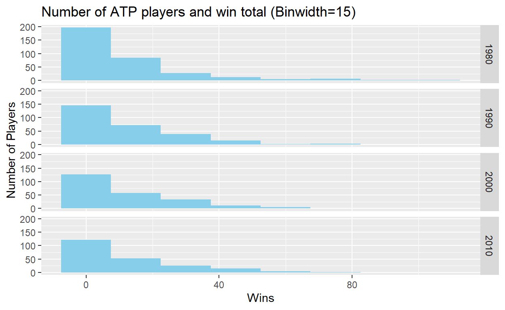
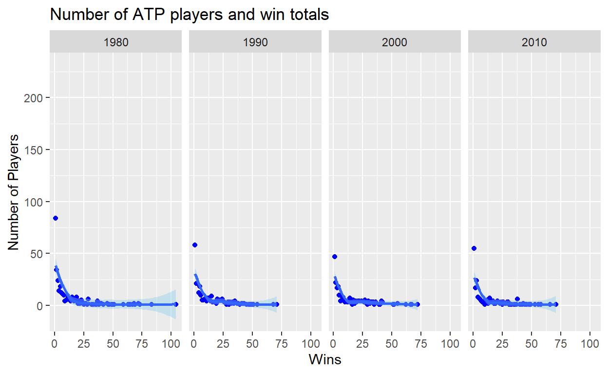
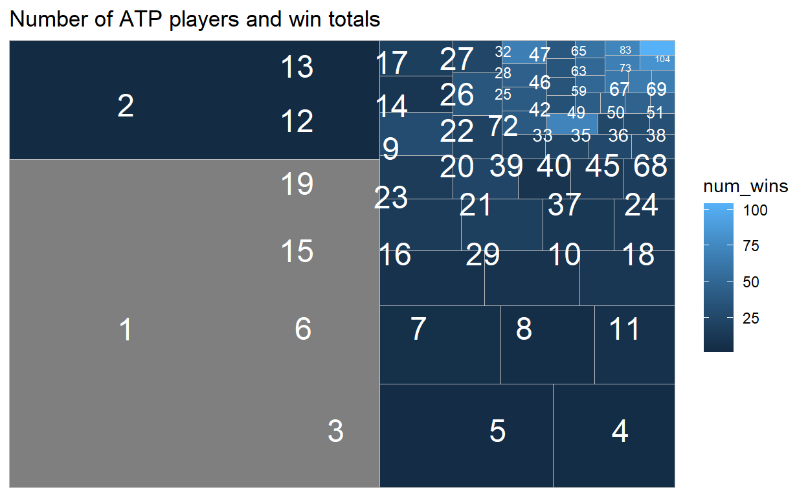

First Draft of Final Project - Using ATP Tennis Data Files will begin some analysis of player populations and success.
ul {
line-height: 0;
}
li {
line-height: 0;
}
...ATP Tennis Statistics Analysis - Iteration 6
For this iteration: I will begin exploring total player population, results of various sub-populations and prize money from tournament performance. I am interested to understand the equity versus pay for performance in the game. First I will develop routines for categorizing the data data for XX years but later will bringing more years data.
Also for this iteration I have tried the following new things: RMarkdown features: TOC, aside, code_folding
paged_table, kable, full_join, and arrange.
First read ATP data files, here I am using only the results from 1980, 1990, 2000, 2010 from GITHUB source.
(Eventually I want to read many more years using a for loop and/or function)
The data includes detailed information about each match played on the ATP tour in a given year.
Tournament Data
Match Data
Player Data (for each winner & loser):
Match Statistics (for each w & l):
ATP1980 <- read.csv("https://raw.githubusercontent.com/JeffSackmann/tennis_atp/master/atp_matches_1980.csv")
ATP1990 <- read.csv("https://raw.githubusercontent.com/JeffSackmann/tennis_atp/master/atp_matches_1990.csv")
ATP2000 <- read.csv("https://raw.githubusercontent.com/JeffSackmann/tennis_atp/master/atp_matches_2000.csv")
ATP2010 <- read.csv("https://raw.githubusercontent.com/JeffSackmann/tennis_atp/master/atp_matches_2010.csv")
This will require further development but for starts I will manually append the data sets into a working version.
tourney_level “D” is for Davis Cup - I will exclude this from my study for now.
ATP_Base<-bind_rows(mutate(ATP1980,season = "1980"),mutate(ATP1990, season = "1990"), mutate(ATP2000, season = "2000"), mutate(ATP2010, season = "2010")) %>%
filter(!str_detect("D", tourney_level))
paged_table(head(ATP_Base,100))
#rm(list = c("ATP1980","ATP1990","ATP2000","ATP2010"))
Lets start with some simple statistics by year. 1
| Season | Total Matches |
|---|---|
| 1980 | 3945 |
| 1990 | 3362 |
| 2000 | 3053 |
| 2010 | 2705 |
| Season | Tournaments |
|---|---|
| 1980 | 101 |
| 1990 | 81 |
| 2000 | 71 |
| 2010 | 66 |
| Season | Players |
|---|---|
| 1980 | 901 |
| 1990 | 678 |
| 2000 | 578 |
| 2010 | 538 |
ATP_Base %>%
select(season,winner_id, winner_name) %>%
group_by(season, winner_id, winner_name) %>%
summarize(season, winner_id, winner_name, num_wins = n()) %>%
distinct() %>%
arrange(desc(num_wins)) %>%
head(20)%>%
kable(col.names = c("Season","Player ID","Player Name","Wins"), caption = "Top Winners")%>%
remove_column(c(2))
| Season | Player Name | Wins |
|---|---|---|
| 1980 | Ivan Lendl | 104 |
| 1980 | John McEnroe | 83 |
| 1980 | Jimmy Connors | 73 |
| 1980 | Gene Mayer | 72 |
| 1980 | Eliot Teltscher | 72 |
| 2000 | Marat Safin | 72 |
| 1990 | Boris Becker | 71 |
| 2010 | Rafael Nadal | 71 |
| 1980 | Jose Luis Clerc | 69 |
| 1980 | Brian Gottfried | 68 |
| 1980 | Bjorn Borg | 68 |
| 1990 | Stefan Edberg | 68 |
| 1980 | Guillermo Vilas | 67 |
| 2000 | Magnus Norman | 67 |
| 2000 | Yevgeny Kafelnikov | 66 |
| 2010 | Roger Federer | 66 |
| 1980 | Harold Solomon | 65 |
| 1980 | Brian Teacher | 63 |
| 2000 | Gustavo Kuerten | 62 |
| 1980 | Wojtek Fibak | 59 |
player_table<-full_join(
ATP_Base %>%
select(season,winner_id, winner_name) %>%
group_by(season, winner_id, winner_name) %>%
summarize(season, winner_id, winner_name, num_wins = n()) %>%
distinct() %>%
rename(player_id = winner_id, player_name = winner_name),
ATP_Base %>%
select(season,loser_id, loser_name) %>%
group_by(season, loser_id, loser_name) %>%
summarize(season, loser_id, loser_name, num_loses = n()) %>%
distinct() %>%
rename(player_id = loser_id, player_name = loser_name),
by=c("season"="season","player_id"="player_id","player_name"="player_name")
) %>%
mutate(num_matches=num_wins+num_loses, win_percent=100*num_wins/(num_wins+num_loses))
| Season | Player Name | Wins Percent |
|---|---|---|
| 1980 | Bjorn Borg | 91 |
| 2010 | Rafael Nadal | 88 |
| 2010 | Roger Federer | 84 |
| 1980 | John McEnroe | 83 |
| 1980 | Jimmy Connors | 83 |
| 1990 | Boris Becker | 83 |
| 1990 | Stefan Edberg | 82 |
| 1980 | Gene Mayer | 82 |
| 1990 | Ivan Lendl | 82 |
| 1990 | Andre Agassi | 81 |
| 1980 | Vadim Borisov | 80 |
| 1980 | Guillermo Vilas | 79 |
| 1980 | Ivan Lendl | 79 |
| 2000 | Gustavo Kuerten | 77 |
| 2000 | Lleyton Hewitt | 76 |
| 2000 | Pete Sampras | 76 |
| 1980 | Jose Luis Clerc | 76 |
| 2010 | Novak Djokovic | 76 |
| 1980 | Konstantin Pugayev | 75 |
| 1990 | Scott Melville | 75 |
This is a key chart that is beginning to paint the picture about how many ATP players are participating in tournaments but winning very few matches.
player_table%>%
select(season, player_id, num_wins)%>%
# group_by(season, num_wins)%>%
# summarize(season, num_wins, count = n())%>%
# distinct()%>%
ggplot(aes(x=num_wins))+
geom_histogram(binwidth = 15, fill = "SkyBlue")+
# scale_fill_brewer(palette = "Blues")+
facet_grid(rows = vars(season))+
labs(title="Number of ATP players and win total (Binwidth=15)", x="Wins", y="Number of Players")

This chart demonstrates that same point but visually it is a little more diffcult to see the trend given how many player literally win 0-1 match all year.
player_table%>%
select(season, player_id, num_wins)%>%
group_by(season, num_wins)%>%
summarize(season, num_wins, count = n())%>%
distinct()%>%
ggplot(aes(x=num_wins, y=count))+
geom_point(color = "Blue")+
geom_smooth(fill = "SkyBlue") +
facet_grid(cols = vars(season))+
labs(title="Number of ATP players and win totals", x="Wins", y="Number of Players")

Some treemaps
player_table%>%
select(season, player_name, num_wins)%>%
filter(season == "1980")%>%
group_by(season, num_wins)%>%
summarize(season, num_wins, count = n())%>%
distinct()%>%
ggplot(aes(area = count, fill = num_wins, label = num_wins
))+
geom_treemap()+
geom_treemap_text(colour = "white", place = "middle", reflow = T)+
labs(title="Number of ATP players and win totals")

For this HW 6 - I’ve started working with the part of the data set to support my hypothesis that there are many, many players at the fringe of ATP who are not winning enough matches to support there career. At the same time there are a select few who win the majority of matches (and associate prize money) but it’s all made possible by those striving for the top but never making it.
Only ATP tournament matches are include. Excludes Davis Cup, Challenge, etc.↩︎